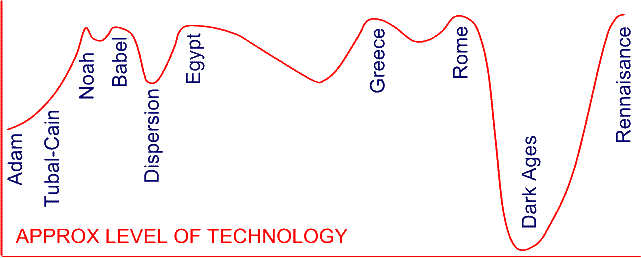

Did Noah cut out the ark with an adze?
Some illustrations show an old bearded Noah chipping away at a log with an adze. Some portray Noah belonging to a 'primitive' culture of nomadic herdsmen, who never made anything more advanced than a tent-pole and a clay bowl. The evidence disputes this. From the 'dawn' of civilization (which is really the 2nd dawn - after the flood), man's ingenuity and technical achievements are astounding. So much so that they are considered ancient 'mysteries', or even 'evidence' of high-tech alien visitations. The evolutionary mindset implies a gradually increasing level of technology which suddenly boomed a few centuries ago. Not so in the diggings. Some of the most ancient Egyptian artefacts defy a simple explanation for their manufacture - from the precisely machined granite vase to the huge accurate pyramids and buildings. And these are the bits that survived some 4000 years!
Noah was using technology that was pre-Renaissance, pre-Roman, pre-Greek, pre-Egyptian and pre-Babylonian. But these high points of the history of technology were all about the same anyway.

A very simplified indication of technology through history illustrating the similarities in the capabilities of major civilizations. In reality the curve would need to be multi-dimensional to illustrate an array of technologies (materials, literature, mathematics, construction, sciences, law and government etc). For simplicity, non Mediterranean post Babel cultures have been omitted (e.g. China).
By combining the know-how of the early Egyptian, Chinese etc, we should have a representation of Babel technology. The tower of Babel was a mere 100 years after the flood, so it should reflect Noah's capabilities.
The noria [water wheel] and the shadduf [lever with bucket] were used to raise water and the aqueduct to move it.
Copper pipes were formed by hammering sheet copper around a dowel and soldering the joint.
Basins were equipped with metal fittings, clay tiles were used as sewer pipes.
"In the Cairo Museum there is an Old Kingdom sarcophagus that was not finished. On the backside which would be the bottom, a thick layer was left, which the quarryers began to saw, and stopped before finishing because evidently part of the lid broke off. There is very clear evidence of sawing the granite visible on this piece. What was used to temper the saw I have no idea, unless it was sand, that derives from deteriorated quartz. That would be harder than granite, though granite contains quartz to some extent. So obviously in the Old Kingdom, the Egyptians were capable of sawing granite, however they did it."
There is obvious evidence for very high quality lathe work in hard stone (including granite!) (Cairo museum). Large holes were drilled in granite.
A hollow granite coffin (sarcophagus) was manufactured with precise flatness inside and out - almost impossible to re-create today, since no machines have been built to create these sorts of objects. (Technically possible with diamond tipped tools and large multi-axis machine tools, but even then it would be very time consuming and expensive...) Modern technicians are accustomed to more mundane operations. For example, the same thing built today would be done in pieces and fitted together. A construction from a single block is far too extravagant by today's standards).
|
Stoneware such as this has not been found from any later era in Egyptian history
- it seems that the skills necessary were lost. |
Egypt is not the only ancient civilization with technology that contradicts the evolutionary idea of gradualy thought. isolated case, although probably the best preserved. High levels of manufacturing and building technology are evident in ancient cultures of China, India, South America and many other places. Obviously most has been lost over the years, so we must assume there was even more on offer than we are aware of.
So,back to Noah. What tools could he have?
History demonstrates that technology usually takes a few centuries to mature. For example, the development of the Greek trireme in the climate of competing marine empires resulted in the huge ships over 100m long. History also shows technology is easily lost when a civilization changes or crumbles, such as the demise of the huge Chinese junks due to a change of government policy. With this in mind, it should be safe to presume that the pre-flood manufacturing expertise was higher than the best Egyptian culture. (Which had to regain momentum after the flood). This is quite a high level of technology, in many ways challenging even the much later Greek and Roman civilizations.
For our purposes, we will put Noah's technology on par with ancient civilizations - such as Egypt.
Noah, a healthy 500-year-old with an extremely Godly heritage, should be smart and capable. An adze? Not likely.
How about a simple, low tech animal powered saw? (It may also have been water powered, but Noah was into animals and it looks nice in a game scene.)
For working with timber, Noah might have had some sort of milling saw, a variety of smaller hand-saws for detail work, chisels, the axe and/or adze, and hand drills for dowels and spike/nail pilot holes, metal wedges for splitting timber, and the good old hammer.
See Animal Power for more information
Similar methods are commonly employed for milling flour, which would be a logical way for Noah to store food for his family.
LAMPS: The design of oil lamps is almost entirely uniform throughout the ancient world. Olive oil, a wick and a small clay bowl - usually with a spout for the wick and some form of hand hold. Lamps would be needed to sort out any problems at night, and might even come in handy inside a room on the lowest level - in the daytime.
http://www.ancientlamp.com/index.html
JARS: Certain types of food that require near-hermetic conditions (e.g. shelled nuts) could be stored in pottery jars. The popularity of pottery containers in the ancient world is reason enough to employ them on the ark. Maybe not as fancy as shown below.IMAGE: http://www.ancientlamp.com/index.html
FEEDERS: Animal water feeders would be a good candidate for pottery - especially for small to mid-sized animals.

A concept for a ceramic water feeder. See Feeding
The working of steel implies very high temperatures were achievable. This requires purpose-built furnaces. Firing of pottery is trivial compared to melting or producing steel. Metal spikes may have been used to join structural timbers in certain critical areas of the hull of Noah's Ark. Steel tools are permitted; Tubal-Cain was doing this long before Noah came on the scene. Bronze or other copper based alloys could be the prominent metal, although the short working life of the ark and pitch coating would make steel acceptable.
Heat was probably required for production or preparation of the pitch coating - although a much lower "cooking" temperature.
Rope is valid, like the Egyptian ropes of grasses, papyrus etc. Wooden pulleys are very effective and easily fabricated, no problem for the Egyptians either. Methods of lifting were obviously employed in the raising of 300 tonnes obelisks in Egypt. For example, "the Vatican in 1586 moved a 330-ton Egyptian obelisk to St. Peter's Square. It is known that lifting the stone into vertical position required 74 horses and 900 men using ropes and pulleys". (Ref 1)
It appears the pyramids employed a large numbers of workers. Likewise Noah's Ark was certainly more than a job for Noah and sons. (Ref 2) The management of large numbers of people requires a certain level of communication and organization. Mathematical and design skills, written languages, logistics for materials, food and economic incentives for workers would be mandatory.
1. Unconventional ideas of Egyptian lifting methods. National Geographic. Researchers Lift Obelisk With Kite to Test Theory on Ancient Pyramids. Robert Tindol, Caltech, July 6, 2001 (http://news.nationalgeographic.com/news/2001/06/0628_caltechobelisk.html)
2. Ancient Egyptian Chambers Explored. Nancy Gupton for National Geographic News Updated April 4, 2003. (http://news.nationalgeographic.com/news/2002/09/0910_020913_egypt_1.html) Archaeologist Mark Lehner, director of the Giza Plateau Mapping Project, believes that as many as 20,000 people moved in and out of the village while building the pyramids. Dormitory-style buildings appear to have held sleeping quarters for as many as 2,000 people. Diggers also have found evidence of copper-making and cooking facilities. "All the evidence points to a very large lost city of the Pyramids that hadn't been known before we started working," said Lehner.